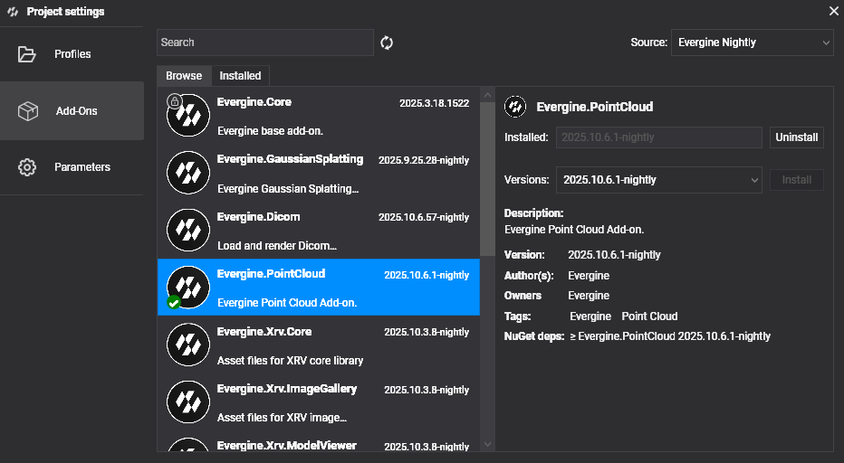

Getting Started
Follow these steps to begin working with Point Clouds in your Evergine applications:
Project Setup
1. Create a New Project
Use Evergine Launcher to start a new project. Along with Windows, select an additional template for your target device.
Note
This addon doesn't support Web platforms. Please, select a different platform to test and use the addon.
2. Add the Evergine.PointCloud Add-on
Open Evergine Studio and add the Evergine.PointCloud add-on to your project. Refer to this guide for instructions on adding add-ons.

Note
Point Cloud add-on is available as NuGet packages. For nightly builds, update nuget.config to include the Evergine nightly feed:
<?xml version="1.0" encoding="utf-8"?>
<configuration>
<packageSources>
<add key="nuget.org" value="https://api.nuget.org/v3/index.json" />
<add key="Evergine Nightly" value="https://pkgs.dev.azure.com/plainconcepts/Evergine.Nightly/_packaging/Evergine.NightlyBuilds/nuget/v3/index.json" />
</packageSources>
</configuration>
3. Setup the Point Cloud Runtime
Register services during Application construction
public partial class MyApplication : Application
{
public MyApplication()
{
// Your usual core services...
this.Container.Register<Settings>();
this.Container.Register<Clock>();
this.Container.Register<TimerFactory>();
this.Container.Register<Random>();
this.Container.Register<ErrorHandler>();
this.Container.Register<ScreenContextManager>();
this.Container.Register<GraphicsPresenter>();
this.Container.Register<AssetsDirectory>();
this.Container.Register<AssetsService>();
this.Container.Register<ForegroundTaskSchedulerService>();
this.Container.Register<WorkActionScheduler>();
// Point Cloud addon hook:
PointCloudRuntime.OnAppConstruction(this.Container);
}
}
Register managers in your Scene
public class MyScene : Scene
{
public override void RegisterManagers()
{
base.RegisterManagers();
PointCloudRuntime.RegisterManagers(this.Managers);
}
protected override void CreateScene()
{
PointCloudRuntime.OnSceneInitialization(this.Managers);
}
}
4. Load point cloud data
Call once the scene is active (e.g., after you navigate to it). Remember supported extensions: .e57, .las, .laz and .pcd.
await PointCloudRuntime.LoadCloudAsync(@"C:\Data\scans\building.e57");
This will:
- Detect the importer based on extension
- Stream metadata + point chunks
- Instantiate the Point Cloud prefab
- Allocate GPU buffers
- Distribute uploaded points into sparse buffers for early image quality
No manual entity creation is required. An entity tagged PointCloud is added automatically.
FAQ
Q: Do I have to manually create the point cloud entity? No. The loader instantiates the prefab and injects required components.
Q: Can I load multiple clouds?
Yes. Each call to LoadCloudAsync adds another entity; buffers expand automatically.
Q: How do I remove a cloud?
Remove / dispose the entity (tagged PointCloud); GPU memory is compacted automatically.
Q: How do I tweak point size or max points per frame?
Resolve PointDataManager (e.g., via Managers.FindManager<PointDataManager>()) and adjust PointSize / MaxPointsPerFrame before or during runtime.